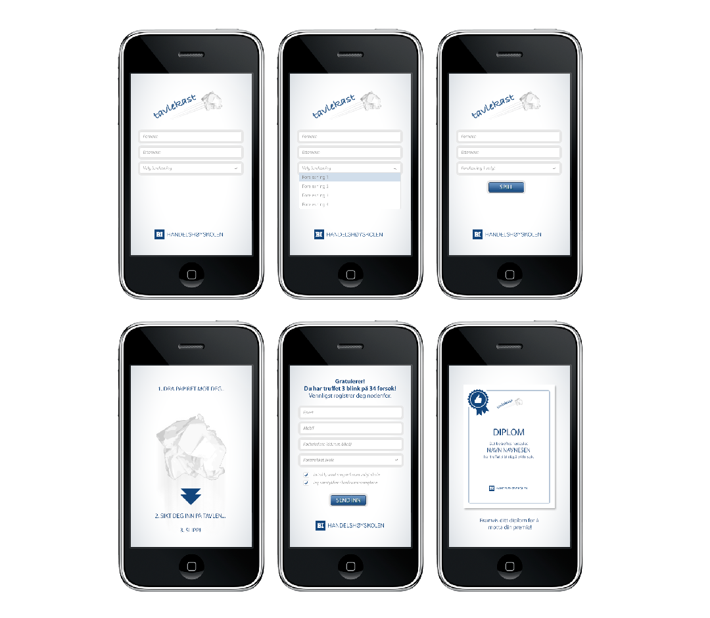

Handelshøyskolen BI

Multiscreen application in nodeJS with socketIO. A game used by the client to promote their school in different campaign happenings. The user walked up to a large screen and logged in to the specified room through their smartphone. With their phone they could throw balls at targets on the screen. Several participants could join in and play against each other.
Project responsibilities: frontend and backend